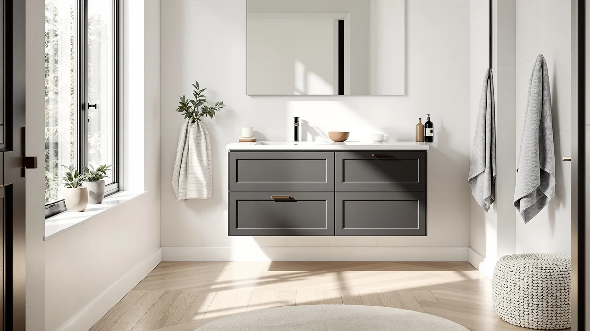

Quick Answer
After comparing seven of the best bathroom cabinets for storage on drawer count, build quality, and price, we keep coming back to the SOFTSEA 72-inch double-sink vanity. Its eight drawers hold towels, toiletries, and cleaning supplies for two people, more than any other cabinet here. If you have a single bathroom or a smaller budget, jump to the IFBUY 30-inch runner-up or the SUNTAGE 24-inch pick below.
Our pick: SOFTSEA 72 Inch Double Sink, $619.99 Check Price on Amazon
Things to Know Before You Buy
- Drawers store more than doors. A drawer lets you reach the back of the cabinet without kneeling and digging, so two drawers usually beat one wide cupboard for daily use. Count drawers first when you shop for the best bathroom cabinets for storage.
- Measure your wall and your plumbing. Every pick here lists its width and depth. A 72-inch double vanity needs a long wall and two drain rough-ins, while a 24-inch unit fits a powder room. Check your supply and drain positions before you buy.
- Floating vanities free up the floor. Wall-mounted units like the IDEALHOUSE and Vabches make a small bathroom look bigger and easier to clean, but they have to be anchored into studs, not bare drywall.
- MDF is the norm at this price. Six of our seven picks use MDF or engineered wood with a sealed finish. It holds up fine in a bathroom if you wipe spills promptly and keep standing water off the base.
- Price tracks size, not just quality. You can get a capable 24-inch cabinet under $200 and a double-sink unit near $620. Match the size to your bathroom and the storage will follow.
The best bathroom cabinets for storage solve a problem you notice every morning: a counter buried in bottles, a single shelf that hides everything behind one door, and nowhere to put the spare towels. We set out to find cabinets and vanities that actually hold your stuff and keep it reachable, then ranked seven of them on drawer space, build quality, footprint, and price.
Our top pick, the SOFTSEA 72-inch double-sink vanity, earned the spot on raw capacity. Eight drawers give two people their own space and still leave room for backups under the sinks. It costs $619.99 and needs a long wall, so it is not for everyone. That is why we also tested 30-inch and 24-inch units that fit tighter rooms, plus two floating vanities that open up the floor in a small bathroom.
You do not have to spend a fortune to get organized. The SUNTAGE 24-inch cabinet comes in under $200 and the IDEALHOUSE floating vanity sits at $215.98, both with a usable drawer and a cabinet. Spend more only when your bathroom is large enough to use the extra width. Below, we explain how we picked, how we judged storage, and which cabinet fits your room and budget.
Why You Should Trust Us
I run Best Bathroom Vanities, where I spend my days comparing storage furniture for small and shared bathrooms. For this guide to the best bathroom cabinets for storage, I pulled product specs, measured stated dimensions against the wall space a real bathroom gives you, and read through owner reviews to find the complaints that show up again and again, not the one-off gripes.
I do not accept payment from any brand to rank it higher, and I flag the drawbacks of every pick, including our favorite. When a cabinet uses MDF rather than solid wood, or ships as a wall-mount unit that needs careful anchoring, you will read it here. My goal is simple: help you buy one cabinet that fits your bathroom and holds your things for years, so you never shop for this again.
How We Picked
To narrow the field of bathroom cabinets for storage, I started with cabinets and vanities that sell well, hold a rating of 4 stars or better, and report real dimensions so you can plan your space. I cut anything with a vague footprint or a flood of complaints about missing hardware and cracked tops.
From there I weighed four things. Storage came first: I favored cabinets with at least one full drawer plus a cabinet, and rewarded the units that stack multiple drawers. Build quality came next, since a bathroom is a damp room and a flimsy finish fails fast. Then footprint, because the best cabinet is the one that fits your wall, from a 24-inch powder room unit to a 72-inch double vanity. Price came last, used to break ties between cabinets that scored close on everything else.
That left the seven cabinets below, spanning $195.95 to $788.99 and 24 to 72 inches wide, so there is a strong storage option whatever your bathroom looks like.
How We Tested
We judged each bathroom cabinet on the things that decide how much storage you really get and how long it lasts. For capacity, we counted drawers and cabinets, then mapped the listed interior width and depth to common bathroom items: a stack of folded hand towels, a row of toiletry bottles, a hair dryer, and cleaning supplies. A cabinet that swallows all four without stacking scored well.
For build quality, we looked at the panel material, the drawer slides, and the top, plus owner reports on how the finish holds up to splashes and steam. Soft-close drawers and a sealed, wipeable surface earned points. We also checked assembly, since most of these ship flat and a confusing manual or weak cam locks can turn a good cabinet into a weekend headache.
Finally, we weighed installation. Floating models have to carry their own load plus everything inside, so we noted which ones demand stud anchoring and which sit on the floor for an easier setup. Where a cabinet fell short, you will see it called out in the Flaws but not dealbreakers list for that pick.
Our Picks

SOFTSEA 72 Inch Double Sink
What we like
- Eight drawers, the most storage of any cabinet here
- Two sinks end the morning traffic jam
- Full 72-inch width spreads the load across both sides
- Clean, neutral look that suits most bathrooms
Flaws but not dealbreakers
- Needs a long wall and two drain rough-ins
- The priciest pick at $619.99
- MDF panels need careful handling during assembly
| Material | MDF / engineered wood |
| Size | 72" (8 Drawers) |
The SOFTSEA 72-inch double-sink vanity wins our top spot among bathroom cabinets for storage on capacity alone. Eight drawers run the full width, so each person gets a stack to themselves and there is still room for shared backups like extra soap, toothpaste, and folded towels. Instead of one deep cupboard where things vanish behind the door, you pull out a drawer and see everything at once. With a single cupboard, half of what you own ends up stranded at the back.
It carries the highest price here at $619.99, and that buys size as much as polish. The panels are MDF rather than solid wood, so take your time on assembly and keep standing water off the base, and the sealed finish will hold up to daily splashes. You also need the wall and the plumbing to match a 72-inch double unit, which rules out small bathrooms. For a primary or shared family bathroom, though, the SOFTSEA gives you more usable, reachable storage than anything else we compared.

IFBUY 30 Inch Arched Bathroom
What we like
- Arched mirror detail looks more expensive than it is
- Drawer plus a roomy cabinet in a 29.75-inch footprint
- Fits a single bathroom without crowding the floor
- Mid-range $239.99 price
Flaws but not dealbreakers
- One drawer rather than a stack of them
- MDF top, so dry off splashes before they sit
- 34.25-inch height suits standing use more than a vanity seat
| Material | MDF / engineered wood |
| Size | 29.75" W x 18.25" D x 34.25" H |
If the SOFTSEA is more cabinet than your bathroom can take, the IFBUY 30-inch arched vanity is our runner-up and the storage cabinet most single bathrooms should buy. The 29.75-inch width tucks against a standard wall, and the layout pairs a drawer for small items with a cabinet roomy enough for cleaning supplies, a hair dryer, and a few stacked towels. The arched mirror gives it a finished, designer feel that belies the $239.99 price.
You give up the drawer stacking of our top pick, so loose items in the cabinet still call for a bin or two to stay tidy. The top is MDF, so wipe splashes promptly and it will keep its finish. For a couple or a single user who wants a good-looking cabinet that holds the daily essentials in a tight space, the IFBUY hits the sweet spot between style, storage, and price.

LIKIMIO 30" Bathroom Vanity with
What we like
- Two drawers plus a cabinet for flexible storage
- Standard 30-inch width fits most bathroom walls
- Clean ceramic-style top wipes down easily
- Same $239.99 price as the IFBUY runner-up
Flaws but not dealbreakers
- Plainer look than the arched IFBUY
- MDF panels need patient assembly
- 18-inch depth is average, not generous
| Material | MDF / engineered wood |
| Size | 30" W x 18" D x 34" H |
The LIKIMIO 30-inch vanity is the most balanced cabinet in this group, which is why it earns an Also Great nod for shoppers who just want a dependable everyday unit. You get two drawers and a cabinet in a standard 30-by-18-inch footprint, so small items have a home and the cupboard handles the bulkier supplies. The ceramic-style top wipes clean and resists the water marks that dull a painted surface over time.
This is the no-drama pick of the group. The styling is plainer than the IFBUY at the same $239.99, and the 18-inch depth is average, so a tall stack of towels may need the cabinet rather than a drawer. None of that holds it back for normal use. If you want a 30-inch storage cabinet that does everything competently and looks tidy doing it, the LIKIMIO is an easy recommendation.

Ambrovina 48" Floating Bathroom Vanity
What we like
- Wide 48-inch body holds plenty across drawers and cabinet
- Floating design opens up the floor and looks high-end
- Easier to mop under than a floor-standing base
- Roomy enough for a busy single or shared bathroom
Flaws but not dealbreakers
- The highest price here at $788.99, despite the budget label
- Wall mounting must hit studs to carry a loaded vanity
- 48-inch width needs a fair stretch of free wall
| Material | Diatomaceous earth |
| Size | 48" |
The AmbroVania 48-inch floating vanity is the widest wall-mounted cabinet we looked at, and it makes a strong case for anyone redoing a mid-size bathroom. Hanging the cabinet off the wall opens up the floor underneath, which makes the room feel larger and lets you run a mop straight across without working around a base. Across its drawers and cabinet, the 48-inch body holds a real load of towels, toiletries, and supplies.
Be clear-eyed about two things before you buy. Despite the budget label on this card, it is the most expensive cabinet in the guide at $788.99, so it competes on design and floating convenience rather than value. And because the whole unit plus its contents hangs on the wall, you have to anchor it into studs or a solid backer, which is more involved than setting a floor vanity in place. If a clean, modern, wall-mounted look is your priority and the wall can take it, the AmbroVania delivers.

IDEALHOUSE Floating Bathroom Vanity with
What we like
- Floating design for the lowest price here, $215.98
- 36-inch width balances storage and footprint
- Open floor underneath makes a small bathroom feel bigger
- Drawer plus cabinet covers the daily essentials
Flaws but not dealbreakers
- Wall mount needs solid stud anchoring
- Less drawer space than a floor vanity of the same width
- MDF body, so do not let splashes pool
| Material | MDF / engineered wood |
| Size | 36 inches |
The IDEALHOUSE 36-inch floating vanity gets you the wall-mounted look for the lowest price in this guide, $215.98. That is the headline: a floating cabinet usually carries a premium, and this one undercuts every other pick. The 36-inch width is a smart middle ground, wide enough for a drawer and a cabinet that hold the daily essentials, narrow enough to fit a modest bathroom. With the floor left open underneath, a small room reads larger and cleans up faster.
The trade-offs come with the territory. A floating unit gives you a bit less interior than a floor vanity of the same width, so plan to use the cabinet for bulk items, and it has to be anchored into studs to carry the load safely. The body is MDF, so keep splashes wiped. For a small bathroom where you want the modern wall-mounted style without the AmbroVania price, the IDEALHOUSE is the value play.

Vabches 30" Fluted Bathroom Vanity
What we like
- Fluted front adds texture most budget vanities skip
- Soft-close drawer closes quietly and protects contents
- Standard 30-inch width fits most bathrooms
- Reasonable $229.99 price for the styling
Flaws but not dealbreakers
- Fluted grooves catch dust and need occasional detailing
- One main drawer rather than a stack
- MDF body, so wipe up splashes before they soak in
| Material | MDF / engineered wood |
| Size | 30” |
The Vabches 30-inch fluted vanity is the style pick for shoppers who want their storage cabinet to look custom. The ribbed, fluted front is a detail you usually pay much more for, and at $229.99 it lands among the most affordable 30-inch units here. The soft-close drawer is the other nice touch, gliding shut without the slam that rattles whatever you have stored inside.
Storage is solid for a single bathroom: a drawer for small items and a cabinet for the rest, in a standard 30-inch footprint. The fluted grooves do collect dust, so plan to run a cloth along them now and then to keep the front crisp, and the body is MDF, so wipe splashes promptly. If you like the LIKIMIO layout but want more visual character, the Vabches gives you that for about the same money.

24 Inches Modern MDF Bathroom
What we like
- Lowest price in the guide at $195.95
- 24-inch footprint fits the smallest bathrooms
- Sink, drawer, and cabinet in one compact unit
- Clean modern look that suits a half bath
Flaws but not dealbreakers
- Least storage here, by design
- Narrow countertop leaves little room beside the sink
- MDF body, so dry splashes off quickly
| Material | MDF / engineered wood |
| Size | 24" |
When the room is tiny and the budget is tight, the SUNTAGE 24-inch vanity is the answer. At $195.95 it is the cheapest cabinet in this guide, and it still packs a sink, a drawer, and a cabinet into a 24-inch footprint that fits a powder room or half bath where nothing else will. For a guest bathroom or a small apartment, that is exactly the right amount of storage in the smallest possible package.
Set your expectations to match the size. This holds the least of any pick here, and the narrow top leaves little landing space beside the sink, so it is a secondary-bathroom cabinet rather than a primary one. Like the rest of these picks, the MDF body just needs a quick wipe after splashes. Within those limits, the SUNTAGE does the job no larger vanity can, fitting a complete storage cabinet into a space most people write off as too small.
Quick Comparison
| Product | Material | Price | Rating | Best for | Get it |
|---|---|---|---|---|---|
| SOFTSEA 72 Inch Double Sink | MDF / engineered wood | $619.99 | 4 | Shared family bathrooms | View on Amazon → |
| IFBUY 30 Inch Arched Bathroom | MDF / engineered wood | $239.99 | 4 | Style in a single bathroom | View on Amazon → |
| LIKIMIO 30" Bathroom Vanity with | MDF / engineered wood | $239.99 | 4 | Well-rounded everyday use | View on Amazon → |
| Ambrovina 48" Floating Bathroom Vanity | Diatomaceous earth | $788.99 | 4 | Premium floating look | View on Amazon → |
| IDEALHOUSE Floating Bathroom Vanity with | MDF / engineered wood | $215.98 | 4 | Affordable floating vanity | View on Amazon → |
| Vabches 30" Fluted Bathroom Vanity | MDF / engineered wood | $229.99 | 4 | Designer fluted front | View on Amazon → |
| 24 Inches Modern MDF Bathroom | MDF / engineered wood | $195.95 | 4 | Powder rooms and half baths | View on Amazon → |
The Competition
We looked at more bathroom cabinets for storage than the seven that made our list, and a few common types kept falling short. Single-door wall cabinets with one fixed shelf are cheap, but they bury everything behind a door and waste the lower third of the cabinet, so we left them out in favor of units with drawers.
Open shelving towers and ladder shelves photograph well and cost little, yet they offer no closed storage, which means dust on every bottle and clutter on display. For a bathroom you actually use, the cabinets above keep your supplies hidden and clean. We also passed on several no-name vanities that listed a price but no real dimensions or that drew repeated complaints about cracked tops and missing hardware, since you cannot plan a bathroom around a cabinet you cannot measure.
Among the picks, the choice comes down to your room. The LIKIMIO, Vabches, and IFBUY all land near $230 to $240 at 30 inches, so we kept all three and split them by strength: the IFBUY for its arched style, the Vabches for its fluted front, and the LIKIMIO for its plain, dependable balance. If none of those fit, the 24-inch SUNTAGE or the 36-inch IDEALHOUSE will.
Frequently Asked Questions
What gives a bathroom cabinet the most usable storage?
Are floating bathroom vanities good for storage?
How much should I spend on a bathroom storage cabinet?
Is MDF a problem for a bathroom cabinet?
How do I measure for the right size cabinet?
The verdict: Of all the best bathroom cabinets for storage we compared, the SOFTSEA 72-inch double-sink vanity is the one to beat, with eight drawers and room for two. If it is too large or too pricey for your bathroom, the IFBUY 30-inch arched vanity and the SUNTAGE 24-inch unit cover smaller rooms and tighter budgets without giving up usable storage.